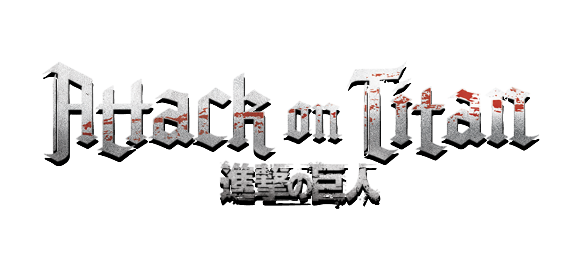
Dentro e fora das muralhas
Sucesso da Trama
A obraA história de Attack on Titan (Shingeki no Kyojin) começa em um cenário horrível: o que restou da humanidade vive isolado dentro de três muralhas de 50 metros de altura para se proteger de Titãs que são gigantes com traços de humanos sem inteligência que devoram pessoas. Tudo muda quando o Titã Colossal abre uma brecha na muralha externa, forçando o protagonista Eren Yeager a testemunhar sua mãe ser devorada. Ele jura exterminar cada um deles, mas ao se alistar na Divisão de Reconhecimento, Eren descobre que o mistério por trás dos Titãs é muito mais profundo, transformando uma simples luta de "sobrevivência contra monstros" em uma complexa guerra geopolítica sobre liberdade, preconceito e herança histórica.
 O que cativou o público
O que cativou o público
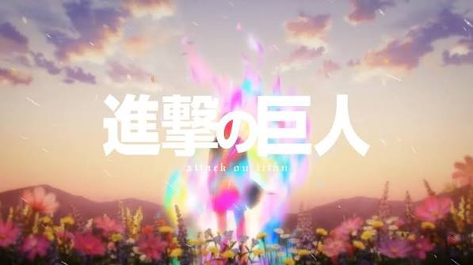
Recordes e impacto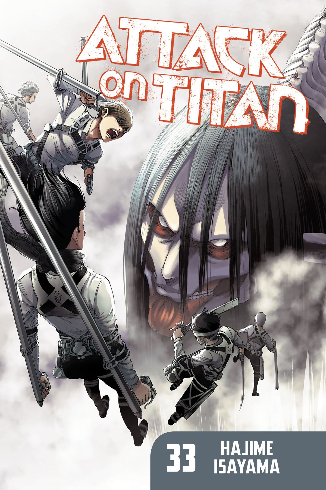
ConclusãoEm resumo, Attack on Titan provou ser muito mais do que um anime de monstros gigantes: é uma das maiores obras de ficção do nosso século. A jornada de Eren Yeager nos ensina que o verdadeiro perigo nunca esteve do lado de fora das muralhas, mas sim nas escolhas e na própria natureza humana.
Os 9 titãs originais
Titã Fundador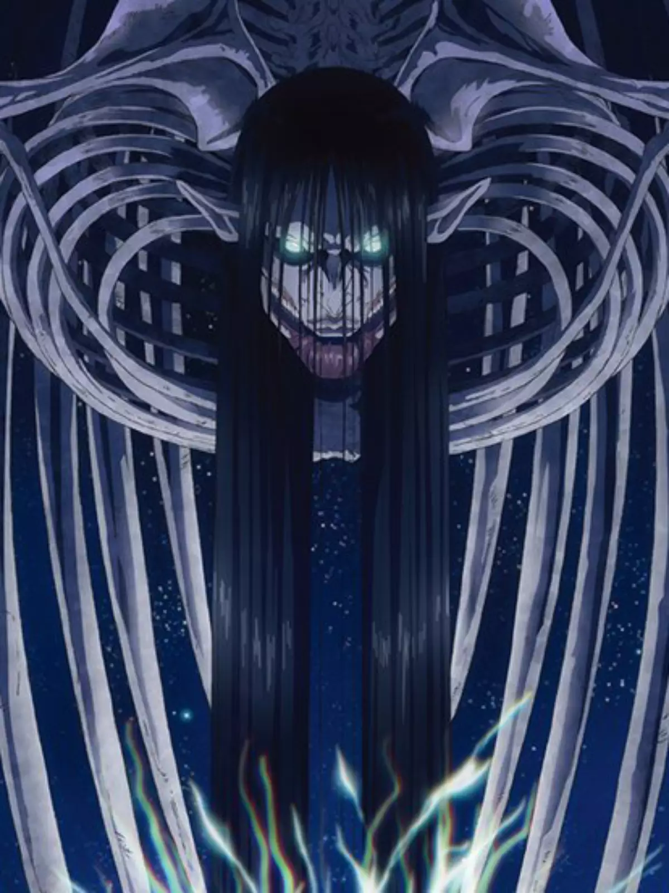
É a origem de todos os Titãs e o poder máximo do universo da série. A sua grande força não está no combate físico, mas na capacidade de controlar a mente de todos os Eldianos, alterar suas memórias, modificar a anatomia do seu povo e comandar hordas de Titãs puros com um único grito. Porém, para usar todo esse potencial, o portador precisa ter sangue real.
Titã de Ataque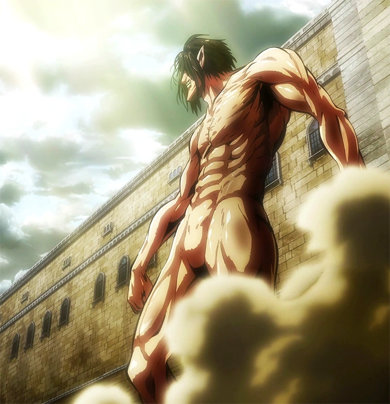
O grande símbolo da busca pela liberdade, este Titã é famoso por nunca se curvar a ninguém e sempre avançar ao longo das eras. Sua habilidade mais impressionante é a capacidade de acessar as memórias de seus futuros portadores, fazendo com que quem o controle saiba exatamente o papel que precisa desempenhar na história para alcançar a libertação.
Titã Colossal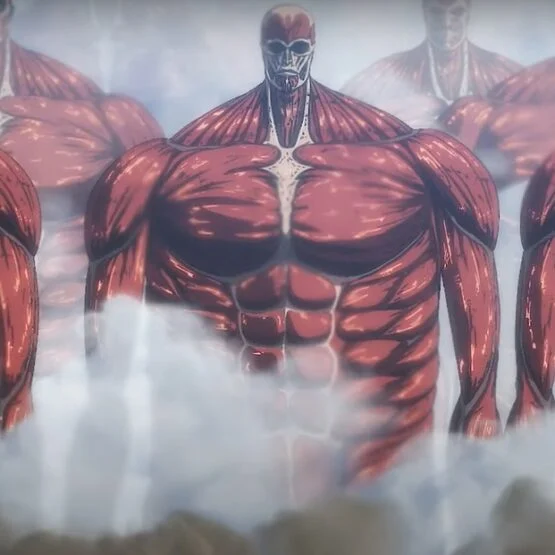
Conhecido como o "Deus da Destruição", ele é um gigante de 60 metros que causa uma devastação equivalente a uma bomba atômica no exato instante em que se transforma. Além do seu tamanho imponente que consegue olhar por cima das muralhas, ele pode consumir a sua própria massa corporal para liberar jatos de vapor fervente e queimar qualquer inimigo que tente se aproximar.
Titã Blindado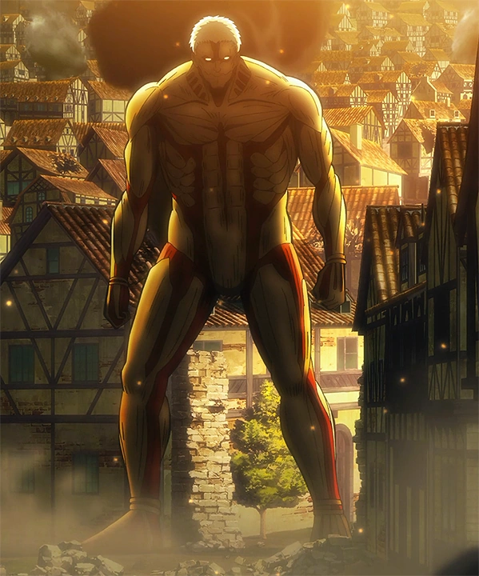
Funciona como o escudo vivo e a força de impacto do grupo. Todo o seu corpo é revestido por placas de blindagem rígidas que o tornam imune a espadas comuns e disparos de canhões. Embora essa proteção pesada reduza a sua velocidade, ele é a arma perfeita para romper portões e resistir a ataques diretos em batalhas de grande escala.
Titã Fêmea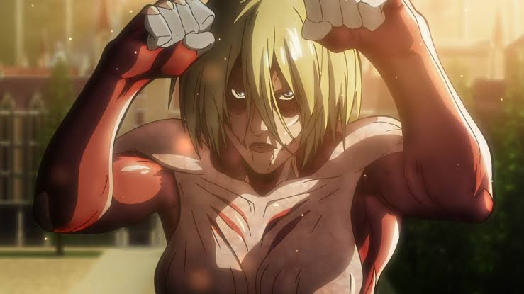
Destaca-se por ser uma das unidades mais equilibradas e perigosas em combate corpo a corpo. Com uma agilidade incrível, ela possui a capacidade única de absorver pequenas características de outros Titãs ao consumir partes deles, além de conseguir cristalizar partes do seu próprio corpo para ataque e defesa, e atrair Titãs puros através de um grito desesperado.
Titã Bestial
Com uma aparência que lembra um primata gigante e braços desproporcionalmente longos, este Titã transforma a força bruta em precisão mortífera. Sua principal tática em guerra é arremessar pedras e escombros a quilômetros de distância com a velocidade e o impacto de projéteis pesados, destruindo exércitos inteiros antes mesmo que eles consigam se aproximar.
Titã Mandíbula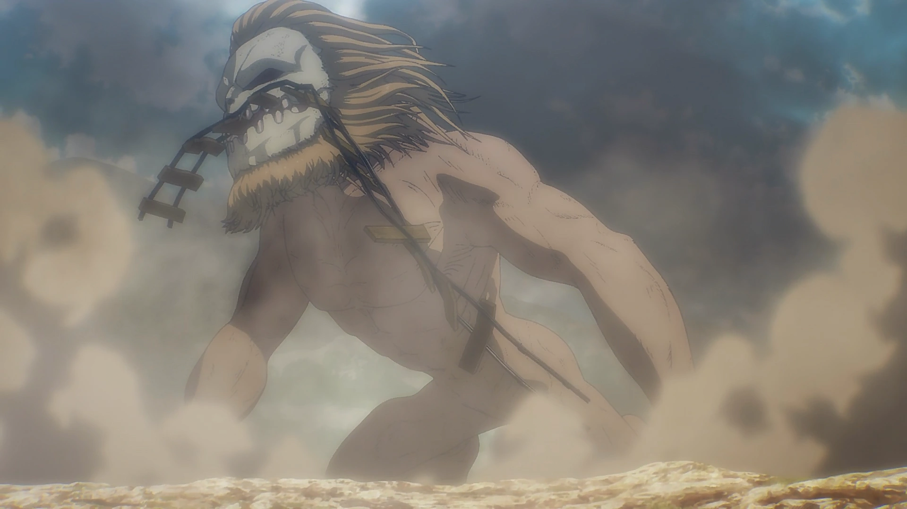
É o mais rápido e ágil entre as nove forças. Ele compensate o seu tamanho menor com uma velocidade impressionante que lhe permite se mover facilmente por florestas e cidades. Suas garras e mandíbulas são extremamente duras e afiadas, sendo capazes de esmagar e cortar praticamente qualquer material, incluindo as proteções de cristal mais resistentes.
Titã Carroça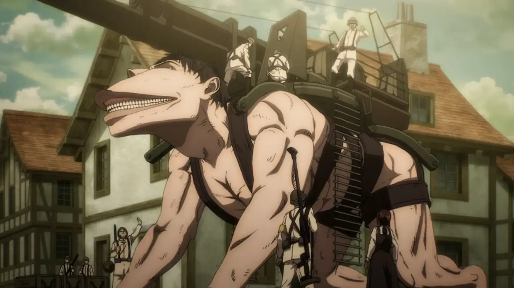
Andando sobre quatro patas, este Titã foi feito para a guerra de longa duração. Sua maior vantagem é uma resistência física absurda, permitindo que o portador continue transformado por meses a fio sem se cansar. Por conta disso, ele é muito utilizado para transporte de mantimentos, missões de reconhecimento e como plataforma para metralhadoras em combate.
Titã Martelo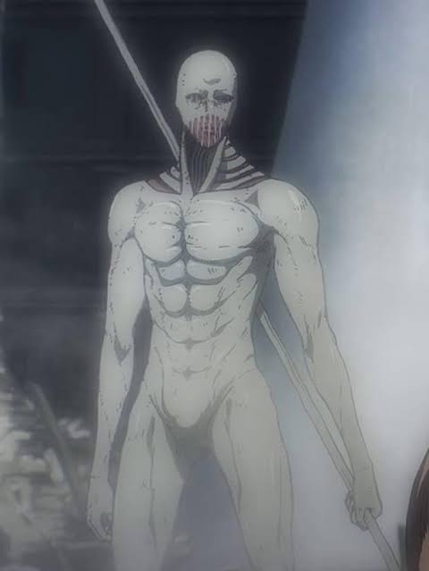
Um dos mais versáteis e surpreendentes no campo de batalha, ele consegue materializar e moldar estruturas de cristal rígido a partir do chão, criando armas como lanças, espinhos e um gigantesco martelo. Para completar, o seu humano não precisa ficar na nuca do Titã, podendo operar o corpo à distância protegido dentro de um cristal subterrâneo.